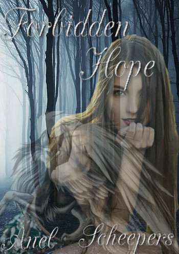

A Fantastical Adventure
Explore the Land of Alimara as the characters find themselves in Ravion...
A small kingdom North of Tartarus.
Where they live and grew up but where all the action started.
In a small kingdom, Ravion there is a lot of activity about in the forest of the kingdom.

The Bloodstone Forest is full of evil and scary creatures but some things prefer to make it their home because it was a place where they felt safe. Most of Ravion's residents don't dare to enter that forest but whenever they do something bad happens.
Lots of rumors had reached the ears of all the kingdoms and lands of Alimara, the rumors about a legend that noone knew existed until someone actually went to disover it.
Exploring the forest, making it their home. Safe from anything and anyone who may want to harm them.
In the middle of the forest there lies a camp... Not just any camp. Camp Malinovic, a camp that helps anyone that needs it, whether they are mortal or immortal, they will halp all.
This book is still a working progress but I will share what I have on this website.
I the author of this book, love working with these characters, wether they are the villains or not. I love them all, Raven with her fears, Jason with his charm. Luna, a beautiful wolf with gorgeous wings and who wouldn't love Daniel, he is just as kind as he is good looking.
Here is where I will explain how I see my characters and show you the inside of the Forbidden hope saga.
I have learnt so much from my characters.
People say "You can't learn from characters you created."
Well I say that they are very mistaken and that they most likely naver had a true character that they have created, have they even read any books.
Anyone can see that a character is not just a character, they have emotions and personalities that they made for themselves as they grew up. The life they lived and how it effected them to make better or worse choices. Brodian for example is an amazing guy but he is a villain, loves seeing others dead. that was only because his father decided that Jason would be the best person to be the heir to te camp.
Plot
The Novel follows two character as they develope different personalities in the book. Firstly there is Raven. A beautiful girl with animalistic actions, this is because she grew up with the Viltorn wolves. One thing she could not do was speak the native language of Progantia. She could only understand the language of the animals. It shows as she learn to be a normal girl while learning to control her ever growing abilities.
Secondly the book follows Jason, a mysterious guy with many talents and secret. In Camp Malinovic the are only a few people who has ever seen his face. His family and his two friends Drew and Daniel. The Novel shows his developement to trust more and how one person can make him get out of his shell so easily when no one else could. It also shows the sacrifices Jason will have to make to help those he cares for deeply.